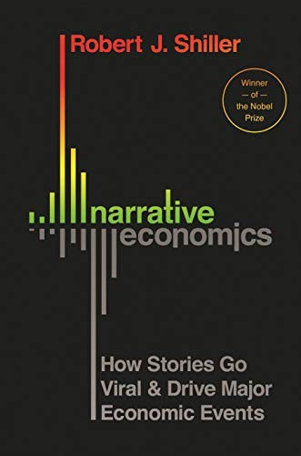
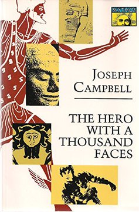

Módulo 06 / Apartado 6 de 6
El relato, y por qué los datos pierden
Un diagnóstico correcto que compite contra una historia que la gente ya se cuenta, pierde. El viaje del héroe, las narrativas que mueven economías, de dónde salen las leyendas y qué pasa cuando invocas una y no la cumples.
La frase que hay que aceptar antes de empezar
Llevas cinco módulos aprendiendo a analizar bien. Este apartado empieza diciéndote que eso no basta, y conviene tragarlo entero porque es la razón de que tantos informes excelentes acaben en un cajón.
No podemos esperar vencer un relato sentimental nunca con los fríos datos. Un relato solo se vence con otro relato mejor.
Esto no es una rendición ante la posverdad. Es una constatación operativa: si tu diagnóstico correcto compite contra una historia que la gente ya se cuenta, el diagnóstico pierde, y pierde por goleada, y luego tú te quedas con la razón y sin resultado.
Un dato es una posición. Un relato es un mapa. El dato dice «las ventas cayeron un 12%». El relato dice quién es el culpable, qué se hizo mal, quién sufre y qué pasa si no cambiamos. Da causalidad, personajes y final. Se recuerda, se cuenta en el pasillo y sobrevive a la reunión.
Y hay algo peor, que ya viste en el módulo 3: los datos que contradicen un relato identitario no lo debilitan. Se leen como un ataque, y refuerzan la posición. Es la primera regla del sensemaking del módulo 4: no se discute sobre esto.
Conclusión: el relato no es la envoltura de tu trabajo. Es parte del trabajo, y es la parte que decide si se implanta.
La estructura que funciona siempre, y por qué
En 1949, un profesor de literatura comparada llamado Joseph Campbell publicó un libro donde sostenía que los mitos de culturas que nunca se habían tocado cuentan, por debajo, la misma historia. La llamó monomito, y hoy se conoce como el viaje del héroe.
Y la traducción al trabajo, que es lo único que importa aquí. Cuando presentas un cambio, el héroe no eres tú. El héroe es la organización, o el equipo, o el cliente. Tú eres el mentor: el que aparece cuando el otro se ha negado a cruzar el umbral, le da una herramienta y se aparta. Un informe donde el consultor es el héroe se lee como una factura. Un informe donde el héroe es el que tiene que ejecutarlo se lee como un plan.
Que esto mueve dinero de verdad
Por si suena a taller de escritura creativa, hay un premio Nobel de Economía que dedicó un libro a demostrar que las historias mueven la economía, y no como metáfora.

El libro de esto Narrative Economics: How Stories Go Viral and Drive Major Economic EventsShiller —Nobel de Economía en 2013— sostiene que las narrativas populares son causas de los acontecimientos económicos y no solo su reflejo, y hace algo poco habitual: las modela con las mismas ecuaciones que la epidemiología usa para las infecciones, con su tasa de contagio y su tasa de olvido. De ahí salen predicciones sobre cuánto dura una historia y cuándo puede rebrotar. Sus casos van del patrón oro al Bitcoin, pasando por la servilleta en la que se dibujó la curva de Laffer — Robert J. Shiller · 2019
De dónde salen las leyendas
La turra sobre el relato místico tira de una fuente estupenda y poco conocida: Jan Harold Brunvand, folclorista estadounidense que en 1981 publicó The Vanishing Hitchhiker, el libro que puso las leyendas urbanas en el mapa académico.
Su tesis es exactamente la que necesitamos: las leyendas nacen de hechos banales —un accidente, un rumor de barrio— y crecen porque construyen y refuerzan la cosmovisión del grupo que las cuenta. Ofrecen una explicación coherente para algo complejo o que da miedo. No sobreviven las historias verdaderas: sobreviven las que encajan.
Y Recuenco añade la pregunta que hay que hacerse: ¿qué leyendas estamos creando hoy y qué realidades banalizan? ¿Cuántas de las peleas actuales lo son sobre bases sólidas y cuántas son performances sobre relatos imaginarios? Su respuesta sobre el caso español es dura: los problemas reales del país no gastan ideología, aunque quien pelea use las leyendas porque conoce su potencia.
Y el aviso, que es la mitad seria del asunto
Aquí es donde la turra se pone interesante, porque no acaba en «cuenta buenas historias». Acaba en lo contrario:
Uno. La mística te lleva hasta donde te lleva. Para ir más allá hacen falta armas de calibre superior, es decir, resultados. O quieres resolver las cosas o quieres dar la apariencia de que estás en ello, y a medio plazo se distingue.
Dos, y es lo grave. Manipular relatos sentimentales pone en marcha fuerzas incontenibles que, cuando no se ven satisfechas, devoran a sus propios invocadores. Los ejemplos que pone son de manual: la depresión posterior al procés, el doom and gloom posterior al Brexit. Aprendices de brujo intentando que los mitos les frieguen el suelo.
Ojo con las leyendas: las puedes invocar, pero cuando salen del portal adquieren vida propia.
Que es también el criterio ético que separa este apartado de un manual de propaganda. El relato tiene que ser verdad. Sirve para que un diagnóstico correcto se entienda, se recuerde y se ejecute; no para que uno falso pase. Y la prueba es sencilla: si al cumplirse tu historia la gente se siente estafada, no contaste una historia, montaste una estafa.
La otra cara: el bizcocho y el fondant
Y para que no quede un mensaje simplón, la turra complementaria dice lo contrario y las dos cosas son verdad a la vez. Recuenco tiene una obsesión declarada con el triunfo de la forma sobre la sustancia: la tarta que por fuera es una obra de arte y por dentro es un bizcocho seco.
Usa una imagen de Galeano —el envase— para decir que nos guiamos por las apariencias porque a veces no podemos discernir la sustancia y a veces no queremos. Y su diagnóstico de época es que esto se va a pagar: la llama la era de la evitación emocional y la procrastinación, en la que nunca ha habido tantas maneras de evadirse por completo de la realidad.
Las dos cosas a la vez, entonces. Sin relato, tu sustancia no llega a ninguna parte. Sin sustancia, tu relato es fondant sobre un bizcocho seco y alguien lo va a morder. El trabajo consiste en hacer las dos, y en ese orden: primero el bizcocho.
Y para terminar: encuentra tu voz
Todo este apartado ha ido de contar bien lo que hay. Queda la pregunta de quién lo cuenta, y en marzo de 2026 le dedicó un hilo entero. El material de partida es raro y por eso funciona: La Encrucijada, un híbrido de cómic y disco de 2017 hecho a cuatro manos por el dibujante Paco Roca y José Manuel Casañ, el de Seguridad Social, a partir de conversaciones reales entre los dos sobre el oficio.
Lo que le interesa de ahí no es la teoría de la comunicación, sino las mecánicas por las que la gente sigue a alguien. Y son bastante contraintuitivas para un contexto profesional:
Los que enseñan sus dudas, sus inseguridades y su miedo a quedarse secos generan identificación. No te siguen por infalible: te siguen por reconocible.
Quien asume riesgos y evita el autoplagio atrae público por la valentía, no por el acierto. La rutina tras el éxito es lo que mata: convierte la pasión en oficio sin entusiasmo.
Lo que engancha suele estar en la mezcla — un cómic con un disco dentro. Es la liminalidad del módulo 4 aplicada a la audiencia: se vuelve porque hay capas.
La gente sigue a quien evoluciona, no a quien repite. La lealtad viene de percibir crecimiento, y la complacencia se huele.
Y el cierre del hilo es el mejor argumento que hay para tomarse en serio este módulo. No va de destacar: va de sobrevivir.
En un mundo donde escribir bien sin más, o hacer tu trabajo dignamente sin más va a ser una commodity, uno no busca su voz para ser excepcional, sino para salvarse de la quema. De Darwin.
Es exactamente lo mismo que decía en el módulo 4 sobre la IA generativa y el sabor, dicho cinco años después y en primera persona: lo que queda cuando el trabajo correcto se automatiza es quién lo firma. Y una voz no aparece sola: se construye con experiencias y con golpes procesados.
Y así cierra el hilo, que es como cerramos esto: la máxima aspiración de alguien que quiere comunicar algo es que quien te lea, te oiga o te vea sepa que eres tú en un instante. «Encuentra tu voz. Todas las demás están ya cogidas.»
Y con esto se acaba
Seis módulos. De dónde sale la disciplina, las escuelas de las que bebe, cómo se piensa mal, cómo se entiende una situación y se sacan ideas, los métodos concretos, y la gente que tiene que ejecutarlos.
Que es, insisto, una introducción. Has visto el mapa; no has pisado el terreno. Recuenco tiene un nombre para lo que viene después: la travesía del desierto. Lo dice de empresas ante el abismo de la IA, pero se traslada solo, y la parte que se traslada mejor es esta: lo que él se encuentra no son fracasos, son «racionalizaciones brillantes para no atravesar el desierto porque patatas». Puedes empezar por tu cuenta con la secuencia de aquí abajo, que es gratis, o meterte en el programa que dirige en la UNIR, que es entrar acompañado. Lo que no hay es una tercera opción en la que te lo saltas leyendo.
No un caso de libro. Uno donde te juegues algo, aunque sea pequeño. Sin eso, todo lo anterior es entretenimiento.
Seis palabras y un CATWOE por actor. Ishikawa y cinco porqués. La rejilla ES / NO ES. La pregunta de Taguchi sobre qué tendría que ser cierto. Y la arquitectura de incentivos de quien tiene que ejecutarlo.
Las diez páginas son la sustancia. La historia es lo que hace que alguien lea las diez páginas.
Cada apartado lleva sus fuentes al final, con los hilos originales enlazados. Y hay media docena de sitios donde estas páginas corrigen o matizan el material del que salen, cada uno señalado donde toca. Uno de ellos es una corrección a estas mismas páginas.
Fuentes de este apartado
Las turras de las que sale
Posterior al corte del Turrero Post. Usa La Encrucijada, el cómic-disco de Paco Roca y José Manuel Casañ, para desmontar las mecánicas por las que la gente sigue a alguien: autenticidad vulnerable, riesgo, hibridación y duda perpetua. Cierra con el mejor argumento del corpus a favor de tener voz propia, que no es la excelencia sino la supervivencia.
La gestión del relato místicoTurra · 52 tweetsLa turra central de este apartado. Va de cómo se fabrica una leyenda, por qué funciona y quién gana con ella, apoyada en el libro de leyendas urbanas de Brunvand. De aquí sale la frase de que un relato solo se vence con otro relato, y también el aviso final: las leyendas se invocan fácil y luego tienen vida propia.
Bizcochos y fondant: el dato y el relatoTurra · 44 tweets · may 2023El contrapeso. Va del triunfo de la forma sobre la sustancia, con una vuelta por el concepto de sustancia en Aristóteles y los escolásticos que es más entretenida de lo que suena, y con el «envase» de Galeano. Su diagnóstico de época —la era de la evitación emocional— es discutible y está bien argumentado.
El maravilloso mundo de las narrativas interesadasTurra · oct 2021La tercera pata: cómo se construye una narrativa a la medida de quien la cuenta, y cómo se detecta. Tiene un momento de honestidad que vale el hilo entero: si Kahneman sabía que él mismo no era inmune a los sesgos, dice, yo soy perfectamente consciente de que puede que mi cabeza esté racionalizando cosas insostenibles porque tengo intereses.
Los libros

The Hero With a Thousand FacesJoseph Campbell · 1949El libro del monomito, y la estructura narrativa que sostiene desde la Odisea hasta La guerra de las galaxias —Lucas lo citó explícitamente—. Es denso y mitológico; si solo quieres la herramienta, el círculo de ocho etapas del dibujo es todo lo que necesitas. Está en el corpus.
Narrative EconomicsRobert J. Shiller · 2019La prueba de que esto no es literatura: un Nobel de Economía modelando la difusión de historias con ecuaciones de epidemias y mostrando que preceden a los acontecimientos económicos en vez de seguirlos. Es la respuesta a cualquiera que te diga que el relato es la parte blanda del trabajo.
 Influence: The Psychology of PersuasionRobert Cialdini · 1984
Influence: The Psychology of PersuasionRobert Cialdini · 1984Los seis principios —reciprocidad, compromiso y coherencia, prueba social, simpatía, autoridad y escasez— que explican por qué ciertas historias se aceptan y otras no. Es el clásico del campo y sirve tanto para construir un mensaje como para reconocer cuándo te lo están haciendo a ti, que es el uso más valioso.
 Collective IllusionsTodd Rose · 2022
Collective IllusionsTodd Rose · 2022Enlazado en el corpus, y el complemento incómodo: la mayoría de la gente de un grupo puede estar en contra de algo y creer que es la única, con lo que todos actúan según una opinión que nadie tiene. Es la espiral del silencio del módulo 3 con datos nuevos, y explica por qué a veces basta con que alguien diga en voz alta lo evidente.